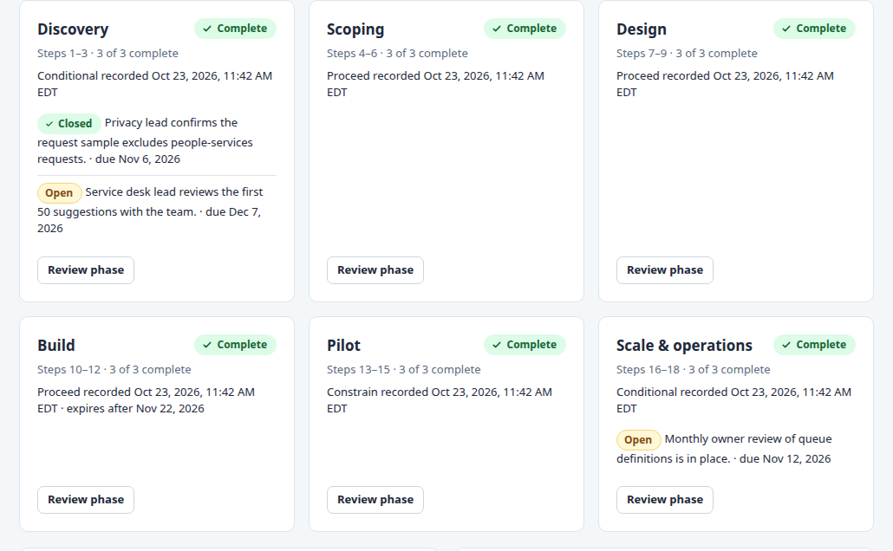

Enterprise Product & Delivery Playbook
An evolving enterprise product for governed AI and non-AI delivery · Product owner and creator
An AI-narrated demonstration covering the business problem, the methodology, the working proof of concept, my background and approach, and the future vision. It shows the original proof of concept; the product has since evolved into the enterprise web platform described below.
Proof of concept
A local, single-user application that puts the six phases and 18 steps into practice.
Web platform foundation
Milestones 1 and 2: organization isolation, collaboration, evidence and executive rollup. Verified locally with synthetic data; not yet deployed.
Next: governed lifecycle
Milestone 3 brings the full six-phase, 18-step journey into the web platform.
The Problem
Organizations run many initiatives at once: AI tools, system replacements, process changes. Teams piece together decisions, evidence and readiness information from delivery tools, documents and spreadsheets, and leaders lack one view of what is ready, what is at risk and what needs a decision.
Product Vision and My Role
The vision is to deliver an enterprise platform that guides Product Managers and teams through a consistent, governed lifecycle, from identifying a business problem through requirements, design, delivery, adoption and ongoing operation.
The platform is designed to support AI, non-AI and hybrid solutions, with configurable guidance, AI-assisted recommendations and controlled agentic execution within defined boundaries. Humans retain governance authority, oversight and accountability.
The intended users include Product Managers, initiative leads, decision authorities, organization administrators and executives who need visibility into initiative progress, risks, decisions and business outcomes.
My role
As Product Owner and creator, I defined the product vision, strategy, methodology, requirements, roadmap, governance framework, architectural direction and acceptance criteria. I manage scope, establish priorities, evaluate tradeoffs and determine whether each milestone meets its acceptance criteria.
I use AI coding assistance to accelerate implementation while retaining ownership of product decisions, technical direction, verification and acceptance.
How the Product Evolved
- 1Enterprise experience
My experience managing enterprise products, programs and application portfolios helped me recognize the need for consistent delivery practices, governance, accountability and executive visibility. Enterprise Experience
- 2Graduate education in Enterprise AI
My Graduate Certificate in Enterprise AI from Stevens Institute of Technology expanded my understanding of AI strategy, architecture, governance, responsible AI, organizational adoption and business value realization.
- 3Enterprise AI Blueprint and supporting frameworks
I brought my professional experience and education together to develop an Enterprise AI Blueprint and supporting frameworks covering enterprise strategy, operating models, intake and prioritization, governance, adoption, human oversight and performance management. Enterprise AI Blueprint
- 4Product and delivery methodology
I translated these concepts into a consistent, repeatable six-phase, 18-step methodology designed to guide Product Managers through AI, non-AI and hybrid initiatives while maintaining flexibility, accountability and decision traceability.
- 5Working proof of concept
I developed a working application with AI coding assistance to test the methodology, guided questions, governance reviews, evidence management, risk management and reassessment capabilities. The proof of concept also helped identify the architectural limitations of a single-user application.
- 6Enterprise web platform
Recognizing the need for enterprise collaboration and executive visibility, I made the product decision to transition to a web-based architecture. The platform is being developed incrementally to support multiple Product Managers, organizational security, configurable governance, controlled AI assistance and enterprise decision support.
See the proof of concept

Each phase shows its gate decision (proceed, conditional or constrain) and any open conditions. Fictional example data.
Product Vision: Enterprise Capabilities
The complete product the vision describes. It draws on my AI Adoption & Augmentation Change Framework, Enterprise AI Operating Model, Intake & Prioritization Framework and Product Manager guidance. Each capability shows where it stands today; anything beyond the verified foundation is product direction, scoped and approved milestone by milestone.
Verifiedin the web platform Workingin the proof of concept Plannedproduct direction
Intake, problem definition and solution suitability
Define the business problem and intended outcome, then compare non-AI, AI and hybrid approaches before assuming AI. Planned: an intake handoff that carries merit and funding decisions, conditions and owners into delivery.
Intended value: invest in the right problems, with the right kind of solution.
Guided lifecycle, configurable questions and stakeholder guidance
Six phases and 18 steps with guided questions and clear next actions. Planned: questions that adapt to the solution type, risk and jurisdiction, and Product Manager guidance tailored to business, user, engineering, operations, security and legal stakeholders.
Intended value: a consistent, repeatable way of working that still fits each initiative.
Requirements, backlog, architecture and data readiness
Steps for the solution approach, product requirements, data foundation and controlled MVP. Planned: early stories, acceptance criteria and continuous backlog refinement for iterative, predictive or hybrid delivery.
Intended value: designs and backlogs that trace back to the business need.
Risk, controls and regulatory applicability
Risk and control registers, with hard blockers that stop progress until resolved. Planned: recording which laws, regulations and contractual obligations apply, confirmed by an accountable person and linked to controls and evidence.
Intended value: problems surface before they reach production.
Governance, approvals and decision traceability
Gate reviews record who decided, why and under what conditions, and changes trigger reassessment. The web platform verifies roles, version-checked edits and a permanent audit history. Planned: delegated authority, exceptions and organization-specific review rules.
Intended value: decisions anyone can trace and defend.
Responsible AI, FATE and controlled agentic execution
Fairness, accountability, transparency and ethics considered throughout. Administrators enable AI agents phase by phase, product managers set each task's limits, and people review results. Agents can draft or act only within approved limits and never approve work.
Intended value: faster delivery with human oversight intact.
Enterprise and departmental AI readiness, adoption and change
Uses the Enterprise AI Operating Model to clarify what the enterprise provides and what a department needs. The AI Adoption & Augmentation Change Framework matches adoption support to how strongly AI influences the work, covering readiness, trust, role changes, resistance and reinforcement.
Intended value: solutions people actually adopt and use well.
Value realization, SQDC and operational ownership
Scale-phase steps that compare results with expectations, and an operating review. Planned: SQDC and value measures defined early and compared with actual results, a named accountable owner for every solution, and handover, incident and retirement reviews.
Intended value: success judged by business outcomes, with accountability after launch.
Enterprise collaboration and executive visibility
Separate workspaces for each organization, several product managers per initiative, protected evidence and an executive rollup limited to what each viewer may see. Planned: richer lifecycle and portfolio views for leaders.
Intended value: one trusted view of progress, risk and pending decisions.
Optional enterprise integrations
Optional links to existing delivery and governance tools and to other program products through defined interfaces. The Playbook remains fully usable without them.
Intended value: less duplicated work, without lock-in.
Delivery Roadmap
How the vision is delivered incrementally. Each milestone has a user outcome and acceptance criteria. Milestones 4 to 8 are a proposed roadmap; scope and timing are not yet committed.
- 1Accepted Identity and organization isolation. People sign in and work only within their own organization.
- 2Accepted Governed initiatives and evidence. Teams manage authorized initiative work and evidence with a full audit history.
- 3In planning Usable governed lifecycle. The six phases and 18 steps, relevant questions, evidence, risks and controls, and human decisions.
- 4Proposed Organization tailoring and governance depth.
- 5Proposed Pilot, adoption and value.
- 6Proposed Operational readiness and continuing review.
- 7Proposed Optional assistance and integrations.
- 8Proposed Enterprise release readiness.
Product Leadership in Practice
Vision and strategy
One lifecycle for AI, non-AI and hybrid work, in a product that organizations can adopt on its own.
Requirements and change control
A baselined requirements set. New needs are reviewed and approved before they change it.
Prioritization
Governance, security and data isolation first. A deliberately thin second milestone proved collaboration and governance before the full workflow.
Architectural tradeoffs
One modular application with no mandatory paid services, run locally or self-hosted. Integrations stay optional.
Roadmap management
Every part of the vision has a place on the roadmap. Work can move between milestones, but it cannot silently disappear.
Validation and acceptance
Each milestone is accepted against criteria I define. Milestone 2 was verified with automated tests and a recorded walkthrough before acceptance, and Milestone 3 requires screen and user review first.
Every gate decision records who decided, why and under what conditions. When something material changes, earlier steps reopen and dependent approvals are reviewed again.
Intended Business Value through SQDC
Safety
Mandatory controls, hard blockers and a named accountable owner before work proceeds.
Quality
Decisions tied to reviewed evidence, with history preserved when things change.
Delivery
Clear next actions and less repeated data entry, for faster, clearer decisions.
Cost
Pilots and value reviews that show whether outcomes justify further investment.
These are the outcomes the product is designed to test. Measures are defined, and baselines will be set with representative users.
Enterprise AI Platform Program
The Playbook is one of several independently operable products in the Enterprise AI Platform Program. Each product is designed to operate independently.
Enterprise Product & Delivery Playbook
Guided, governed delivery: decisions, evidence, risks and approvals across the initiative lifecycle.
PortfolioIQ
Application portfolio assessment and decision support, with recommendations a person confirms. View PortfolioIQ
Leadership Dashboard
A proposed product giving leaders decision-focused views of operational signals, SQDC and human oversight.
Planned integration: the architectural direction is optional integration through defined interfaces rather than a shared database. For example, PortfolioIQ's assessments could inform Playbook decisions. This cross-product integration is not yet implemented.
Product Lessons
Test the method before scaling
The proof of concept put all 18 steps and six gates into practice before I committed to a multi-user architecture.
Collaboration and visibility together
The single-user limit showed that several product managers need to share an initiative while executives see an authorized, organization-wide view.
Humans own the decisions
AI-assisted development accelerated the build, but scope, tradeoffs and acceptance stayed with me.
Governance before functionality
Isolation, roles and audit history came before any workflow, and no real customer data is used until a pilot security checklist is met.
Supporting technical detail
- Proof of concept: a local, single-user web application with no network access beyond the computer it runs on.
- Web platform: Next.js, TypeScript and PostgreSQL, with each organization's data kept separate by the database's own security rules.
- Verification: the platform foundation is backed by 133 database checks and 28 application tests, which failed as expected when the code was deliberately broken. Milestone 2 added browser tests that run in continuous integration. All testing uses synthetic data.